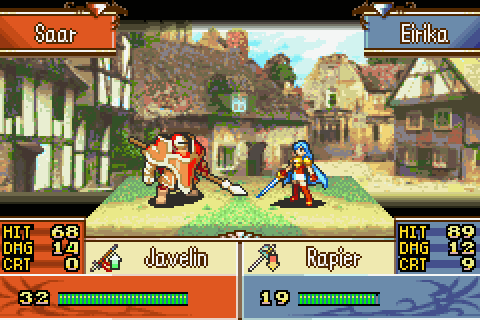

Significance
Fire Emblem was the first game I played that wasn’t an action game where you control your character in real time. In this series, you select individual units in an army and control them to move across a grid-like board strategically. The fantasy elements, on top of the medieval era aesthetics drew me in despite the game mechanics being a bit complicated compared to what I was used to. In addition to that, the expansive casts of characters had me always excited to see who would join our ranks in each mission. There were also many different types of soldiers or “classes” that the characters could be. Infantry units have the smallest amount of movement, while cavalry and flying units could move much farther. Each character has their own set of “stats” that determine their strength, speed, skill, luck, etc. that have a chance of increasing when leveling up from battles. Finally, a rock-paper-scissors type mechanic called the Weapon Triangle adds an additional strategic element to the mix. Swords have the advantage on axes, lances have the advantage over swords, and axes have the advantage over lances. Bows deal extra damage to flying units and in some games, magic types have their own weapon triangle. Sounds like a lot, but that is about the gist of what the game is.Sacred Stones
The first game I played in this series was Fire Emblem:The Sacred Stones for the Gameboy Advance. Released in 2005, this entry was the second Fire Emblem game ever released in the west. This series was relatively unknown until some characters were featured in another Nintendo game called Super Smash Brothers: Melee. Despite being one of my favorite series, I haven’t played many of the games because a vast majority of them are Japan-exclusive. Sacred Stones—at the time—was initially received as one of the easier entries since you can freely train your army between story missions. This fact was actually a plus for me since I was pretty young when I played it, so had no problem with the difficulty. The story and characters were surprisingly grounded compared to the fantasy setting. This was my first experience with a full Role-Playing Game (RPG), so I was fully immersed in the world, the characters, and their conflicts; I never experienced anything like it before.
Gameplay
As the story progresses, you and your army find yourselves in various tense combat situations. At the beginning of each battle, you have to make preparations: Which units you take, what items and equipment they have on them, and where they are placed on the map before the battle begins. During this phase, you can also buy weapons and items to better equip your units and have your units build support with each other by having conversations. Support levels offer various stat boosts when two compatible units are near each other on the battlefield.
 Once you begin a battle, you can now command your selected units on the grid-like battlefield. Some common objectives to achieve victory are to rout the enemy by defeating every last unit, defeat their commander, or seize a throne of the castle. To attack an enemy, you select your unit and move the appropriate amount of spaces to reach the enemy. Before engaging in combat, a menu appears with a forecast of how the battle may go. Things like hit percentage, potential damage dealt, and potential retaliatory damage taken are labeled. With this information in mind, you can change your position relative to the enemy to hopefully gain an advantage from the terrain or change equipment to raise your chances of success. Once you are ready to engage, you can choose to attack and an animation will play showing how the battle plays out. On the battlefield, some enemies may express their doubts about the side they are fighting for. If you have a unit that may be related or sympathetic to the recruitable character, select them and move them to the unit. Then, instead of attacking, you speak to the recruitable unit and they convince them to join your cause. The player should be careful not to accidentally kill or be killed by the unit before they are recruited.
Plot
The Sacred Stones is set on the continent of Magvel, which is divided into six nations. Long ago, five of these nations were each given charge of one of five magical gemstones called the Sacred Stones. The Stones were used to seal away the soul of the Demon King Fomortiis at the end of a conflict between humans and monsters over 800 years ago. The game begins when the Grado Empire, largest of the five founding nations, launches an unexpected assault on the neighboring nation of Renais, home of the royal siblings Eirika and Ephraim. Taken by surprise, Renais is defeated and the two siblings are separated: Eirika escapes to the northern nation of Frelia with the king’s general Seth, while Ephraim goes underground to mount a resistance against the Grado Empire to the south. As Eirika seeks aid from the other nations and gathers allies, the land becomes plagued with undead monsters, a sign of Fomortiis’s return. She is eventually reunited with Ephraim, and the two discover that Grado plans to destroy the Sacred Stones and unleash Fomortiis once more. After failed attempts to contact Grado’s Prince Lyon, the twins’ closest friend, they are forced to mobilize against their former ally as the Empire turns its attention to the other nations’ Sacred Stones, successfully destroying the Stone of Frelia.
The siblings part ways once again, each on a mission to preserve the Stones. Eirika is forced to reach the allied nation of Rausten by passing through the new republic of Carcino, the sixth nation, and secret ally of Grado. Her forces escape Carcino by passing through the desert nation of Jehanna, where the Stone of Jehanna is destroyed and Eirika is cornered by two legions of Grado’s army. Meanwhile, Ephraim is joined by allies from the nations of Frelia and within Grado itself, and they fight their way into the heart of the empire, to the very throne of Grado’s emperor, Vigarde. After defeating Vigarde in battle, Prince Lyon appears and reveals that the Emperor was merely a resurrected puppet, and that he had started the war. When Vigarde died of illness months before, Lyon had feared his inability to rule Grado and became desperate to bring his father back. Lyon sacrificed his nation’s Sacred Stone to revive the Emperor’s body, but inadvertently absorbed the fragment of the Demon King’s shattered soul sealed within. Lyon became a slave to the Fomortiis the Demon King’s will, and both Lyon and Vigarde became puppets of the previously defeated Fomortiis. Lyon under the influence of the Demon King, declares that he will once more rule Magvel once the Stones are destroyed. With this revealed, he vanishes. Burdened with this knowledge, Ephraim heads to Jehanna and rescues Eirika.
Once reunited, the siblings gather their forces and liberate Renais, retrieving its true Sacred Stone, which had been replaced by a decoy when Grado invaded. After gathering reinforcements from Frelia, the twins head east to Rausten, hoping to protect its Sacred Stone. On the way, the twins are confronted by Lyon, who bests the twins and finally destroys Renais’ true Sacred Stone. The twins manage to escape and retrieve the last intact Sacred Stone from Rausten. The siblings pursue Lyon to the Darkling Woods, where he is performing a ritual which will resurrect the Demon King. The twins do battle with Lyon and finally kill their former friend. This inadvertently supplies the final sacrifice that resurrects the true mastermind behind Grado’s invasion of Magvel, Lyons turn to evil and the War of the Stones, the Demon King Fomortiis. Eirika and Ephraim use the Sacred Stone of Rausten to seal the Demon King’s soul, and then their forces destroy its body. The siblings’ allies from the other nations return home, while they themselves seal the final Sacred Stone away and set about restoring their nation.
| Title | Platform | Have Played |
|---|---|---|
| Fire Emblem: Shadow Dragon and the Blade of Light | Nintendo Family Computer (Famicom) | ❌ |
| Fire Emblem Gaiden | Famicom | ✅ |
| Fire Emblem: Mystery of the Emblem | Famicom | ❌ |
| Fire Emblem: Genealogy of the Holy War | Super Famicom | ❌ |
| Fire Emblem: Thracia 776 | Super Famicom | ❌ |
| Fire Emblem: The Binding Blade | Gameboy Advance | ❌ |
| Fire Emblem: The Blazing Blade | Gameboy Advance | ✅ |
| Fire Emblem: The Sacred Stones | Gameboy Advance | ✅ |
| Fire Emblem: Path of Radiance | Gamecube | ❌ |
| Fire Emblem: Radiant Dawn | Nintendo Wii | ❌ |
| Fire Emblem: Shadow Dragon | Nintendo DS | Have but never finished |
| Fire Emblem: New Mystery of the Emblem | Nintendo DS | ❌ |
| Fire Emblem: Awakening | Nintendo 3DS | ✅ |
| Fire Emblem: Fates | Nintendo 3DS | ✅ |
| Fire Emblem Echoes: Shadows of Valentia | Nintendo 3DS | ✅ |
| Fire Emblem: Three Houses | Nintendo Switch | ✅ |
| Fire Emblem: Engage | Nintendo Switch | ✅ |
| Fire Emblem: Fortune’s Weave | Nintendo Switch 2 | Not yet released |
| Total Games Played | 9 ⁄ 18 | |